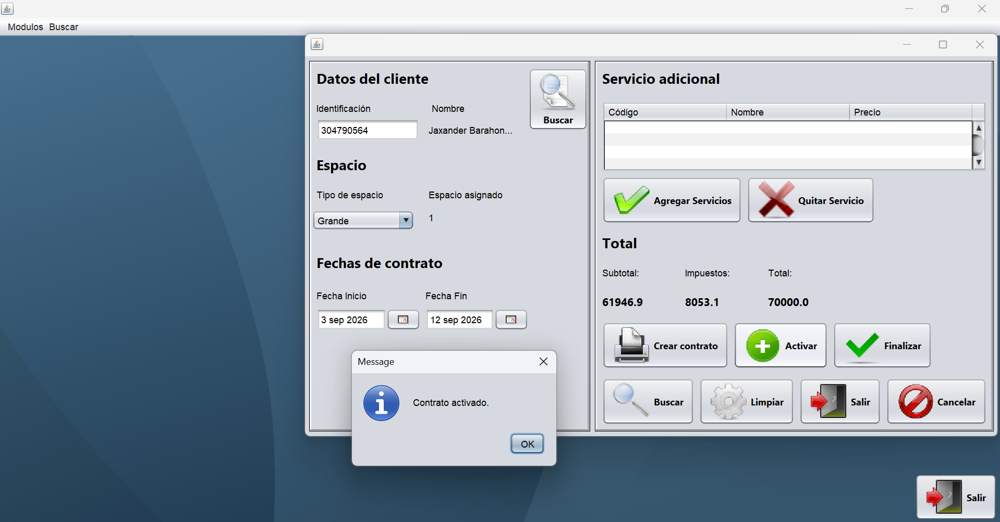
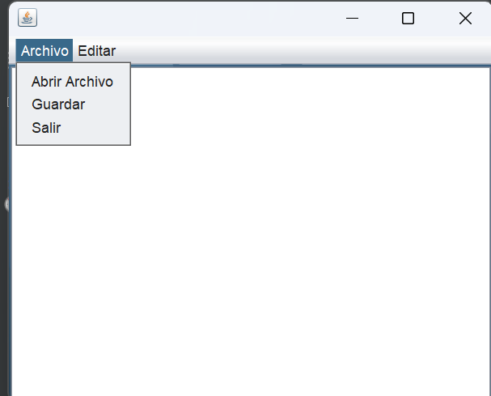
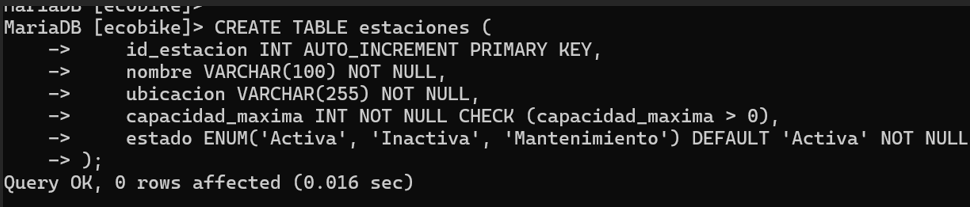

Hola, soy
Desarrollo proyectos relacionados con programación, bases de datos y tecnología.
Soy estudiante de Ingeniería en Tecnologías de la Información interesado en el desarrollo de software, bases de datos, redes y tecnologías informáticas.
Me gusta aprender mediante proyectos prácticos y desarrollar soluciones que puedan ser útiles para personas, empresas y pequeños negocios.
Ayudo a pequeños negocios a digitalizar sus procesos con soluciones simples y funcionales.
Algunos de los proyectos que he desarrollado.

Sistema para administrar clientes, productos y ventas de forma centralizada, ayudando a un negocio a llevar el control de su información sin usar papeles.
Java · MySQL
Ver proyecto
Aplicación de escritorio para controlar y editar documentos, con convertidor de notas y gestor de tareas, centralizando información útil en un solo lugar.
Java
Ver proyecto
Diseño de una base de datos para un sistema de bicicletas compartidas (tipo ecobike): gestión de estaciones, usuarios y viajes, facilitando consultas y una operación más eficiente del servicio.
MySQL
Ver proyecto¿Tienes un proyecto o necesitas una solución tecnológica?
Puedes contactarme para conocer más sobre mi trabajo.
Correo: barahonajack3@gmail.com
Teléfono: +506 8957 4663